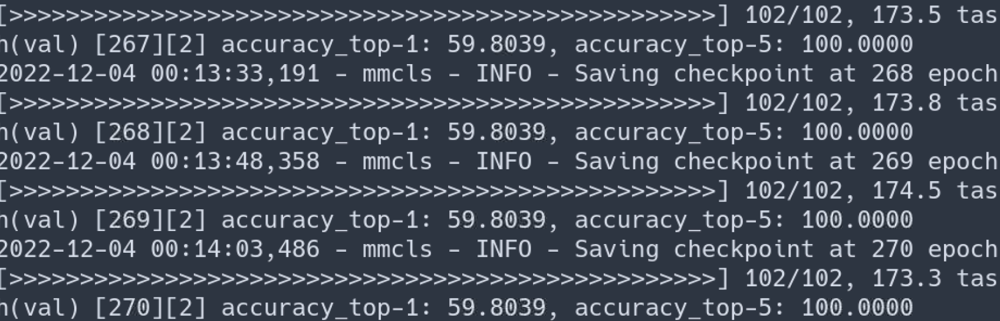

Table of Contents
1. Previous week feedback
1.1. DONE Data augmentation
1.2. DONE Classifer at different temporal sampling rate
1.3. ACTIVE Hand with pen Vs Hand without pen
2. Data augmentation
2.1. Augmentation parameters
- The augmentation parameters are recaled from Sravani thesis.
- With 0.5 probability data is augmented with
- Rotation, {-7,…,+7}
- Width Translation {-5,…+5}
- Flip with a probability of 0.5
- Rescaling the frame between [0.8 to 1.2]
- Shearing with x axis witht a factor of [-0.05, 0.05] <— I eyed this not from sravani thesis
2.2. Dataset
- Writing/nowriting classification
- Each sample is,
- 90 frames
- The longer edge scaled to 224 while mainitaining aspect ratio.
Dataset
# Samples (writing, nowriting) # Sessions Training (309, 579) 28 Validation (124, 88) 2
2.3. Results
NOTE: I have yet to see how the augmented model performs on the test.
Best epoch Trn Loss Val Loss Trn Acc Val Acc No aug 22 0.29 0.66 88 69 With aug 52 0.28 0.67 87 69
2.4. Learning curves
2.4.1. Loss
- Click here to see loss curve without augmentation.
- Click hereto see loss curve with augmentation.

Figure 1: Loss curve for with and without augmentation
2.4.2. Accuracy
- Click here to see accuracy curve without augmentation.
- Click hereto see accuracy curve with augmentation.
Figure 2: Accuracy curve for with and without augmentation
3. Classifers at different temporal sampling rate
3.1. Dataset
- Writing/nowriting classification
- Each sample is,
- A sample can have 30, 60 or 90 frames based on the sampling.
- The longer edge scaled to 224 while mainitaining aspect ratio.
Dataset
# Samples (writing, nowriting) # Sessions Training (309, 579) 28 Validation (124, 88) 2
3.2. Design
The first layer max pooling is adjusted as per FPS. The rest of the architecture will remain the same.

Figure 3: Adjusting the first layer MaxPooling
3.3. Results
NOTE: I have yet to see how the augmented model performs on the test.
Temporal sampling Best epoch Trn Loss Val Loss Trn Acc Val Acc 30 frames per sec 52 0.28 0.67 87 69 20 54 0.27 0.62 89 73 10 59 0.27 0.57 88 77
3.4. Learning curves
3.4.1. Loss

Figure 4: Loss curve at different temporal sampling
4. hand-with-pen Vs hand-without-pen
4.1. Data preparation
4.1.1. Extracting images from video samples
I first extract images from video samples by running the following script
# From HAQ/hands-with-without-pen-classifier python extract_frames.py \ /home/vj/twotb/aolme_datasets/wnw_table_roi/hands_with_withot_pen_images/writing_30fps \ /home/vj/twotb/aolme_datasets/wnw_table_roi/hands_with_withot_pen_images/nowriting_30fps \ /home/vj/twotb/aolme_datasets/wnw_table_roi/hands_with_withot_pen_images
4.1.2. Cleaning data
After extracting the frames as images we might have some improper instances,
- Image from writing
- Without hands
- Without pen
- Images from nowriting
- Without hands
- With hands and pen
This requires manual cleaning* by going through each image.

Figure 5: Images extracted from writing and nowriting video samples that will mislead classifier.
4.1.3. Splitting data into training, validation and testing
To split the data into training, validation and testing we first need the following files and directories,
- Directory having images of hands-with-pen and hands-withot-pen.
A csv file having session name and corresponding data split. Here we are assuming that the image files have information about session. For example,
tv_224_793_G-C3L1W-Mar19-D-Phuong_q2_03-04_30fps_Kid77_4381_4471_44.0.pnghas session information coded into, C3L1W-Mar10-D.
Figure 6: Data split CSV file for writing
Run the following script to distribute images into proper directories as recommended by
mmclassification.# From HAQ/hands-with-without-pen-classifier python split_data.py \ /home/vj/twotb/aolme_datasets/wnw_table_roi/hands_with_withot_pen_images \ /home/vj/Dropbox/writing-nowriting/trn-val-tst-splits.csv
4.2. Training configuration
The training configuration should be placed in mmclassification root
directory, ~/mmclassification/configs/<model>/*_hand_class.py. In
case of vgg the full path is, /home/vj/mmclassification/configs/vgg/vgg19bn_8xb32_hand_class.py.
4.3. Current status
- The model did not learn.
- The problem might be with the library rather than the data.
- I will use Keras library. The mmclassification library
is
- Unnecessarily complex
- The architectures seem to be hidden unless dug in.

Figure 7: mmclassification not learning
5. Discussion / Feedback
5.1. Discussion
- Having more sessions in testing: This requires retraining SOT